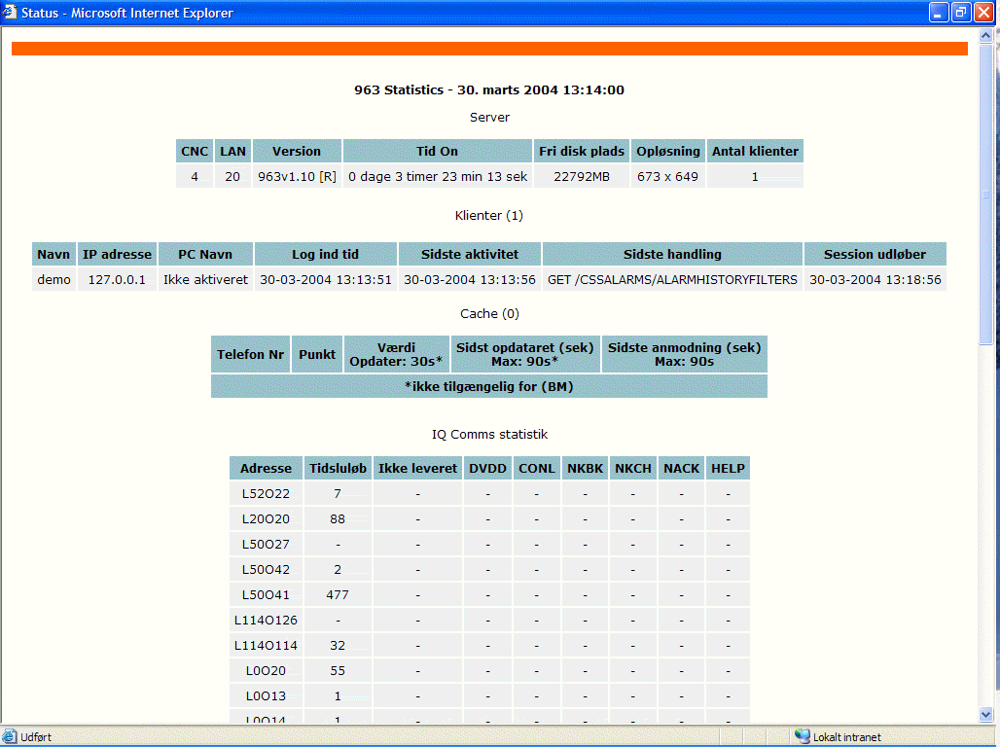

Oplysninger om serverens status kan vises. Dette hjælper konstruktøren, hvis der skulle opstå problemer.
Sådan ser man serverstatus:
1 Gå til 963-Serveren som beskrevet i kapitlet ‘Tilslutning til 963-Serveren’ i denne vejledning.
2 Klik på ‘Serverstatus’. Serverstatus fremkommer, der ligner den vist nedenfor.
